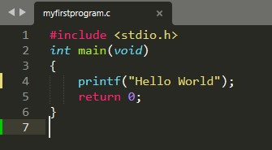
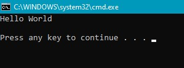

C is a procedural programming language. It was initially developed by Dennis Ritchie in the year
1972. It was mainly developed as a system programming language to write an operating system. The
main features of the C language include low-level memory access, a simple set of keywords, and a
clean style, these features make C language suitable for system programmings like an operating
system or compiler development.
Many later languages have borrowed syntax/features directly
or indirectly from the C language. Like syntax of Java, PHP, JavaScript, and many other languages
are mainly based on the C language. C++ is nearly a superset of C language (Few programs may compile
in C, but not in C++).
"Beginning with C Programming:"
- Structure of a C program
After the above discussion, we can formally assess the structure of a C program. By structure, it is meant that any program can be written in this structure only. Writing a C program in any other structure will hence lead to a Compilation Error.
The structure of a C program is as follows:
-
- Header Files Inclusion: The first and foremost component is the
inclusion of the Header files in a C program.
A header file is a file with extension .h which contains C function declarations and macro definitions to be shared between several source files.
Some of C Header files:- stddef.h – Defines several useful types and macros.
- stdint.h – Defines exact width integer types.
- stdio.h – Defines core input and output functions
- stdlib.h – Defines numeric conversion functions, pseudo-random network generator, memory allocation
- string.h – Defines string handling functions
- math.h – Defines common mathematical functions
- Main Method Declaration: The next part of a C program is to declare the
main() function. The syntax to declare the main function is:
Syntax to Declare the main method:
- Header Files Inclusion: The first and foremost component is the
inclusion of the Header files in a C program.
The components of the above structure are:
int main()
{}
- Variable Declaration: The next part of any C program is the variable
declaration. It refers to the variables that are to be used in the function. Please note that in
the C program, no variable can be used without being declared. Also in a C program, the
variables are to be declared before any operation in the
function.
Example:
int main()
{
int a;
.
.
- Body: The body of a function in the C program, refers to the operations that
are performed in the functions. It can be anything like manipulations, searching, sorting,
printing, etc.
Example:
int main()
{
int a;
printf("%d", a);
.
.
- Return Statement: The last part of any C program is the return statement. The
return statement refers to the returning of the values from a function. This return statement
and return value depend upon the return type of the function. For example, if the return type is
void, then there will be no return statement. In any other case, there will be a return
statement and the return value will be of the type of the specified return
type.
Example:
int main()
{
int a;
printf("%d", a);
return 0;
}
"Writing First Program"
- First Program:
Following is First Program in C
Example
Output

- Line 1: [ #include <stdio.h>
] In a C program, all lines that start with # are
processed by a preprocessor which is a program
invoked by the compiler. In a very basic term, the preprocessor takes a C program and
produces another C program. The produced program has no lines starting with #, all such lines
are processed by the preprocessor. In the above example, the preprocessor copies the
preprocessed code of stdio.h to our file. The .h files are called header files in C. These
header files generally contain declarations of functions. We need stdio.h for the function
printf() used in the program.
Line 2 [ int main(void) ] There must be a starting point from where execution of compiled C program begins. In C, the execution typically begins with the first line of main(). The void written in brackets indicates that the main doesn’t take any parameter (See this for more details). main() can be written to take parameters also. We will be covering that in future posts.
The int was written before main indicates return type of main(). The value returned by main indicates the status of program termination. See this post for more details on the return type.
Line 3 and 6: [ { and } ] In C language, a pair of curly brackets define scope and are mainly used in functions and control statements like if, else, loops. All functions must start and end with curly brackets.
Line 4 [ printf(“GeeksQuiz”); ] printf() is a standard library function to print something on standard output. The semicolon at the end of printf indicates line termination. In C, a semicolon is always used to indicate end of a statement.
Line 5 [ return 0; ] The return statement returns the value from main(). The returned value may be used by an operating system to know the termination status of your program. The value 0 typically means successful termination.
- How to execute the above program:
In order to execute the above program, we need to have a compiler to compile and run our programs. can be used to start C without installing a compiler.Windows: There are many compilers available freely for the compilation of C programs like Code Blocks and Dev-CPP. We strongly recommend Code Blocks.
Linux: For Linux, gcc comes bundled with Linux, Code Blocks can also be used with Linux.
Let us analyze the program line by line.